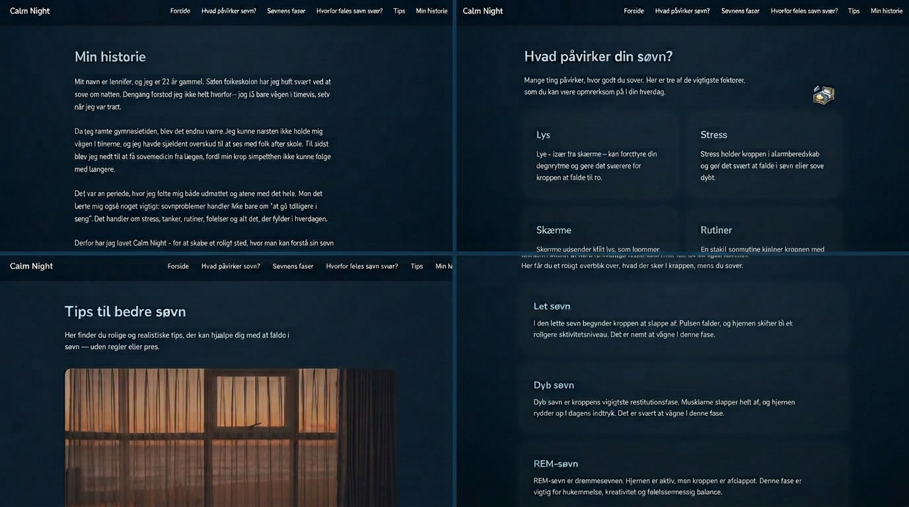

Projekt · Proces · Refleksion
Jeg udviklede en digital prototype med fokus på brugeroplevelse, visuel identitet og interaktion. Projektet handlede om at skabe et produkt, der både var flot, funktionelt og brugervenligt.
Her er linket til min aflevering:
Se min Tema 03 aflevering
Her er et screenshot af min løsning:

Jeg arbejdede med brugerresearch, personaer, user journeys, tests, moodboards og UI‑design i Figma. Jeg lærte at tænke i flows, strukturere indhold og skabe et visuelt univers, der understøtter brugerens behov.
Temaet lærte mig, hvor vigtigt det er at forstå brugeren før man designer. Jeg fik erfaring med at teste, justere og forbedre løsninger — og jeg opdagede, hvor meget UX og UI betyder for et godt digitalt produkt. Udover det så var det også et personligt emne for mig, hvilket gjorde det blev ekstra spændende at lave en hjemmeside om.